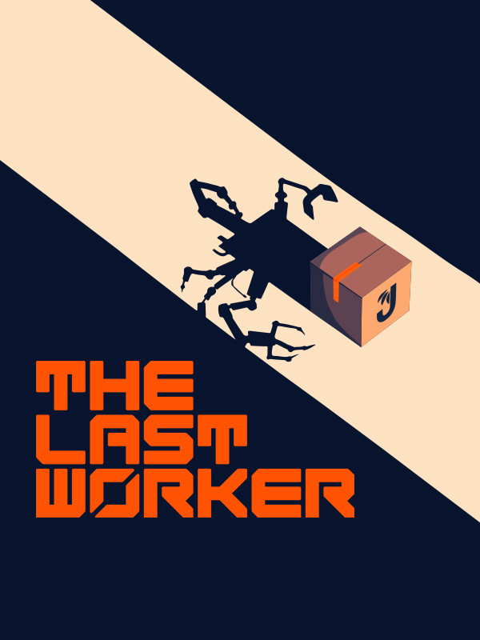

The Last Worker
The Last Worker
Details
|  | |
| Playtime | Not Played |
| Last Activity | Never |
| Added | 2023-08-11 0:29:08 |
| Modified | 2023-08-11 0:45:31 |
| Completion Status | Not Played |
| Library | Steam |
| Source | Steam |
| Platform | PC (Windows) |
| Release Date | 2023-03-30 |
| Community Score | |
| Critic Score | 74 |
| User Score | |
| Genre | Adventure Indie Platform Puzzle Strategy |
| Developer | Oiffy |
| Publisher | Wired Productions |
| Feature | Single Player |
| Links | GOG Steam Official Twitch Discord Epic YouTube |
| Tag | |
Description

The Last Worker is an immersive narrative adventure centered around a lone worker’s last stand in an increasingly automated world, with a unique blend of work simulation and stealth strategic gameplay.
The game is set in a lonely, oppressive but strangely beautiful environment, with characters designed by comics legend Mick McMahon.
Kurt works for the world’s largest retailer and is forced to choose between capitalism or activism. Having dedicated his life to work, Kurt’s loyalty is put to the test when a group of activists ask him to dismantle Jüngle from the inside.
Aboard his corporate issued flying JünglePod and armed with his multi-purpose JüngleGun, Kurt dispatches countless products from a fulfilment centre the size of the sunken city of Manhattan.
Kurt (voiced by Ólafur Darri Ólafsson) has dedicated his life to Jüngle, with only his co-bot, Skew (Jason Isaacs) to keep him company. But when S.P.E.A.R., a group of activists, asks Kurt to help dismantle Jüngle from the inside, Kurt is forced to discover his employer’s dark underbelly.
The Last Worker delivers an emotional, thought provoking and inspiring story with rich characters performed by an all-star cast starring, Jason Isaacs, Ólafur Darri Ólafsson, Clare-Hope Ashitey, David Hewlett, Zelda Williams and Tommie Earl Jenkins.

Hand-painted 3D characters and environments based on concepts by comics legend Mick McMahon (Judge Dredd, 2000 AD)


Hours of narrative, immersive gameplay in a giant hand-crafted environment.


A story worthy of the big screen - A collaboration between writer/director Jörg Tittel (The White King, Ricky Rouse Has a Gun) and VR pioneers Wolf & Wood (A Chair in a Room: Greenwater, The Exorcist: Legion, Hotel R’n’R).


Rich characters performed by an all-star cast in a story filled with heartfelt drama, biting satire and intense action.
Starring Ólafur Darri Ólafsson, Jason Isaacs, Clare-Hope Ashitey, David Hewlett, Zelda Williams and Tommie Earl Jenkins.


Composed by Oliver Kraus (Sia, Adele, Florence and the Machine), with vocals by classical music star Jakub Józef Orliński

Playable in either flatscreen or in VR!